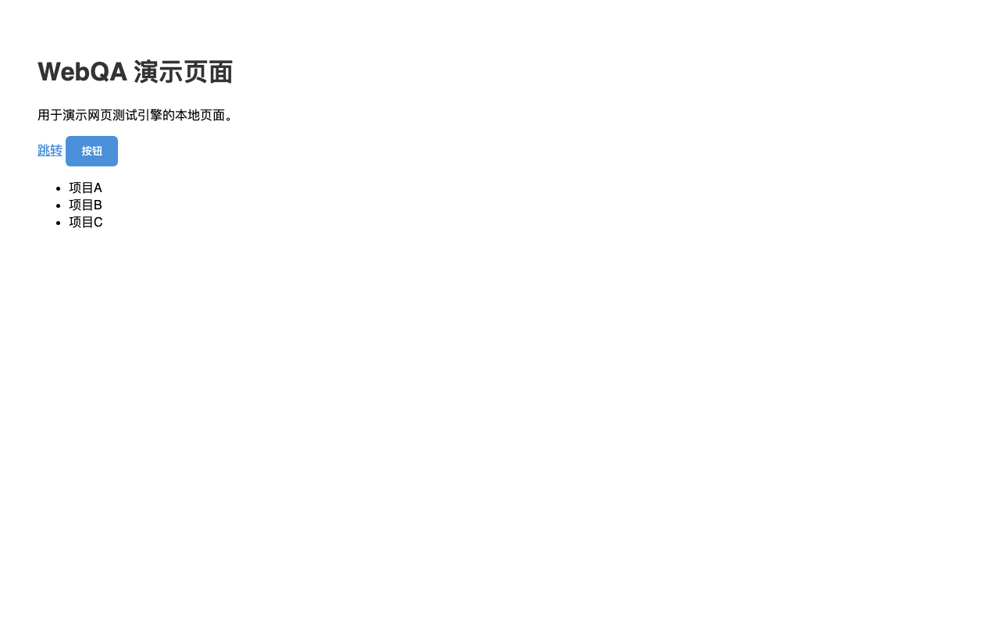

| 结果 | 断言 | 说明 | 耗时 |
|---|---|---|---|
| ✅ | title_contains | 标题含'WebQA' 实际='WebQA 演示站点' | 4ms |
| ✅ | element_exists | 元素 #main-title 存在 | 1ms |
| ✅ | text_contains | #main-title 文本含'演示' | 1ms |
| ✅ | element_count | li 数量=3 ≥3 | 1ms |
| ✅ | visible | .nav-link 可见 | 2ms |
| ✅ | attr | .btn[class]='btn' | 2ms |
| ✅ | status | 状态码=200 | 0ms |
